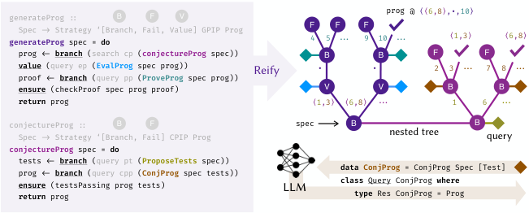
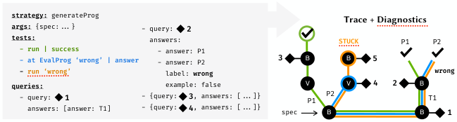
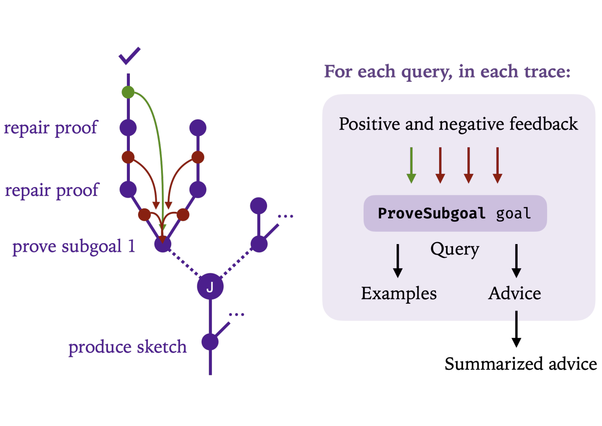

One case study builds a self-improving LLM theorem-proving agent for Lean, using Draft-Sketch-Proof style strategies and Loogle search over Mathlib.
Abstract
Large Language Models (LLMs) can solve previously intractable tasks given only natural-language instructions and a few examples, but they remain difficult to steer precisely and lack a key capability for building reliable software at scale: the modular composition of computations under enforceable contracts. As a result, they are often embedded in larger software pipelines that use domain-specific knowledge to decompose tasks and improve reliability through validation and search. Yet the complexity of writing, tuning, and maintaining such pipelines has so far limited their sophistication. We propose oracular programming: a foundational paradigm for integrating traditional, explicit computations with inductive oracles such as LLMs. It rests on two directing principles: the full separation of core and search logic (allowing the latter to freely evolve without breaking the former), and the treatment of few-shot examples as grounded and evolvable program components. Within this paradigm, programmers express high-level problem-solving strategies as programs with unresolved choice points. These choice points are resolved at runtime by LLMs, which generalize from user-provided examples of correct and incorrect decisions. An oracular program is composed of three orthogonal components: a strategy that consists of a nondeterministic program with choice points that can be reified into a search tree, a policy that specifies how to navigate this tree with the help of LLM oracles, and a set of demonstrations that describe successful and unsuccessful tree navigation scenarios across diverse problem instances. Each component is expressed in a dedicated programming language. We address the key programming language design challenges of modularly composing oracular programs and enforcing consistency between their components as they evolve.
Problem
LLMs are unreliable and hard to steer, so they are usually embedded in larger pipelines that decompose tasks and add validation and search. Such pipelines are complex to write, tune, and maintain, and they lack modular composition under enforceable contracts.
Approach
The authors propose oracular programming, which splits a program into three components: a nondeterministic strategy whose choice points are reified into a search tree, a policy that navigates the tree using LLM oracles, and demonstrations that bundle few-shot examples with navigation tests. Consistency between strategies and policies is enforced by types, and consistency between strategies and demonstrations by navigation tests. The design is specified via a Haskell embedding and implemented in Delphyne, a Python framework with a VSCode extension. Case studies cover Why3 loop invariant synthesis, a self-improving Lean prover agent inspired by Draft-Sketch-Proof with a Loogle-based Mathlib search, and universal queries.

Figure 4 . Example of a Modular Strategy For Program Synthesis. Strategies are nondeterministic programs that can be reified into search trees. They can issue queries to be answered by external oracles (queries are represented by diamonds \diamond and have constructors starting with uppercase letters). Branching , failure , and value nodes are labeled B , F , and V respectively. Horizontal lines d

Figure 12 . Example of a Demonstration for the Strategy from Figure 4 . A demonstration bundles a set of query answers with a sequence of unit tests that describe concrete scenarios of navigating a specific strategy tree using these answers. Each test describes a path in the tree, highlighted with a matching color.
Results
On invariant synthesis, an oracular program using gpt-4o-mini with search matches an o3 ReAct baseline (124 problems solved) at about fourteen times lower cost. Self-improvement for the Lean prover required only four extra lines of strategy code plus custom prompts for generating and aggregating advice.

Figure 39 . Custom Feedback Propagation for our Lean Theorem Proving Strategy. Small green and red dots correspond to custom Feedback nodes (Appendix G.3 ), while J denotes a Join node. Positive feedback is issued for each proved subgoal (green arrows), while Lean errors result in negative feedback (red arrows). Importantly, these custom feedback nodes can be specified by adding only four lines of
Agent
Problems Solved
Average Price (¢)
Median Price (¢)
Abduction (gpt-4o-mini)
124.0 ± 0.0
0.12 ± 0.02
0.05 ± 0.00
Baseline (gpt-4o)
113.0 ± 2.0
3.19 ± 0.31
0.80 ± 0.17
Baseline (gpt-4o-mini)
120.0 ± 1.7
1.64 ± 0.24
0.10 ± 0.01
Baseline (o3)
124.0 ± 0.0
1.90 ± 0.03
1.58 ± 0.13
Loop invariant synthesis: problems solved and cost